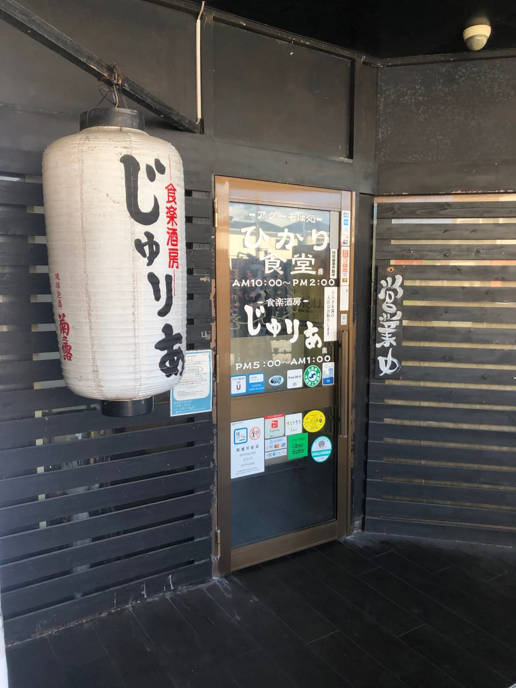
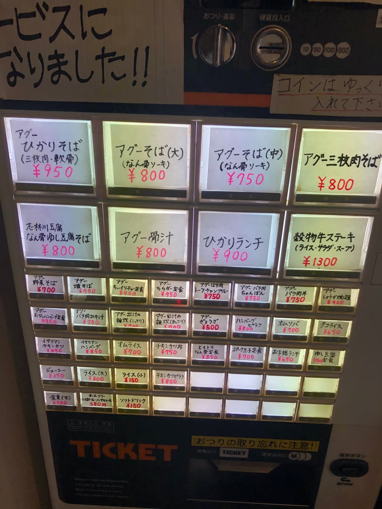
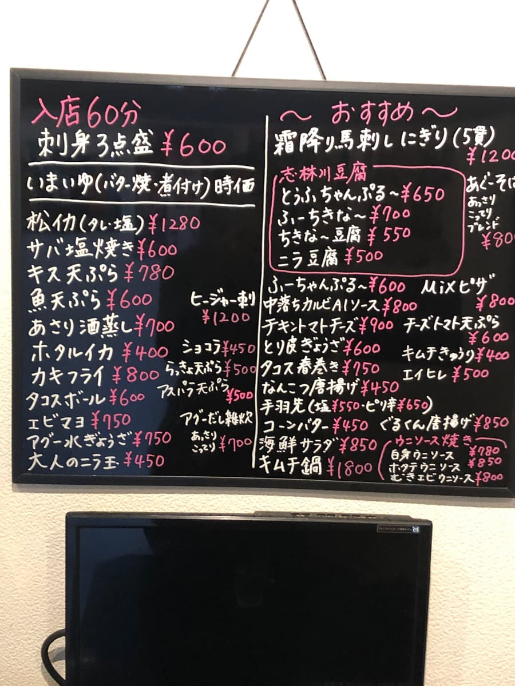
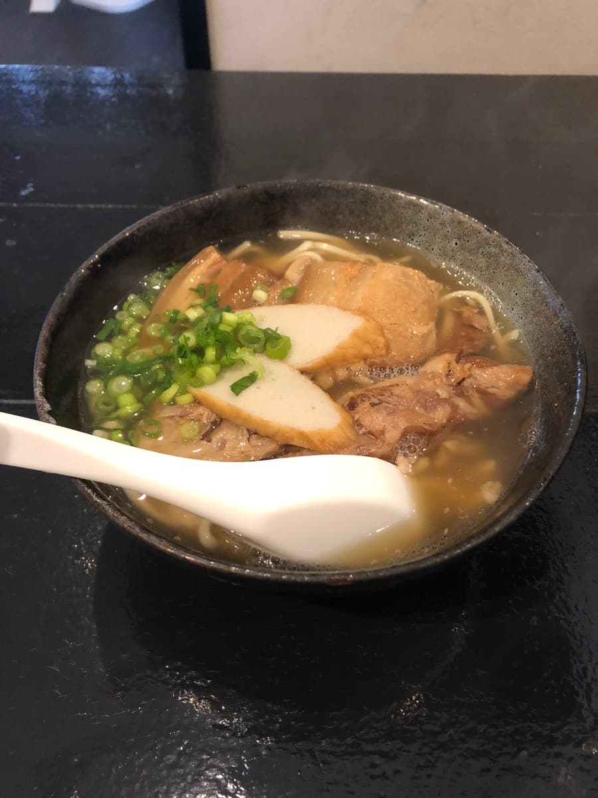
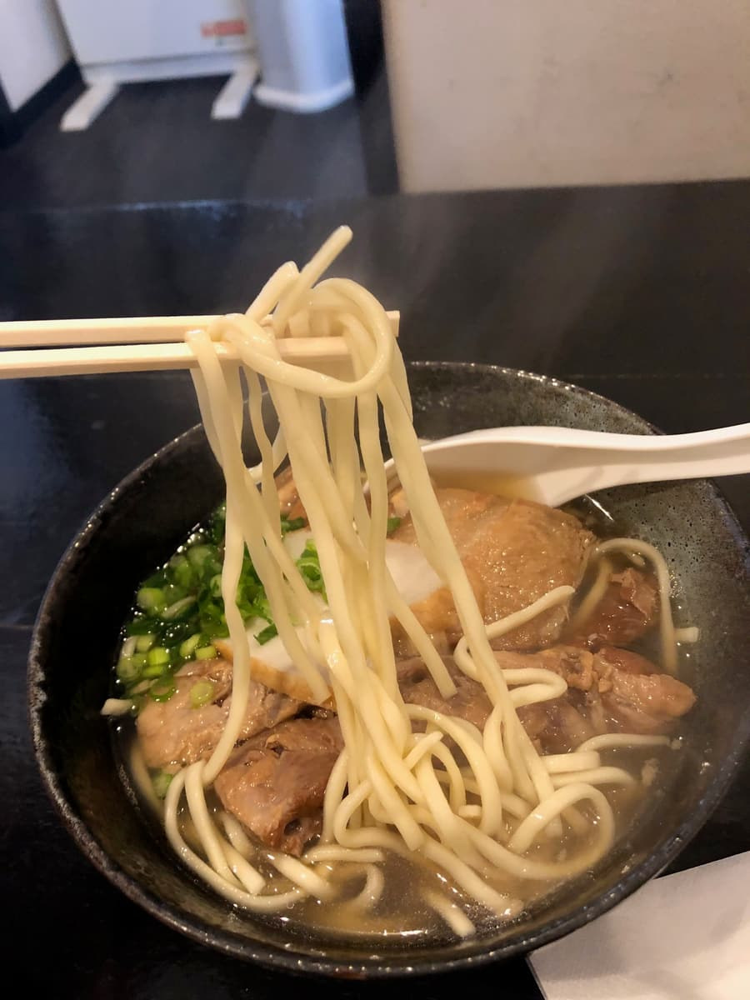
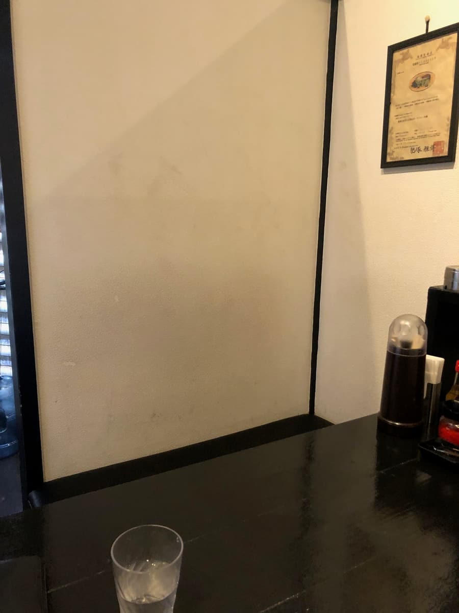

I went to eat here in March 2025 😄
This time I'm introducing "-Agu Soba-dokoro- Hikari Shokudo" in Meido, Okinawa City 😊

The exterior has a calm design based on black, and at the entrance a lantern reading "Juria" catches the eye. In fact, this is a two-in-one shop that serves Okinawa soba as "Hikari Shokudo" during the day and transforms into an izakaya called "Shokuraku Shubo Juria" at night 🍺 It's open across a wide range of hours: 10:00 AM–2:00 PM for lunch and 5:00 PM–1:00 AM at night. It seems they're on Uber Eats too.


Ordering is by ticket machine. Looking at the menu, there's a full lineup of Agu soba items 😆 This time I ordered the shop's top recommendation, the "Agu Hikari soba (¥950)". It's a hearty bowl with both braised pork belly and soft-bone ribs. The interesting point of this soba is that you can choose the soup from three types: rich, light, or blend 🐷 When I asked the staff for a recommendation, they said "The blend is recommended", so I chose the blend without hesitation!

The "Agu Hikari soba" that appeared after a short wait is served in a black bowl and looks pretty good ✨ First, a sip of the soup. The Agu pork broth comes through firmly — full-bodied yet not heavy. I could also sense what seemed to be a bonito broth flavor, giving it a taste unique to the blend. The best of both rich and light, I guess? 😋

Next I try the noodles 🙏 The noodles are medium-thin and straight, with a softish texture.
The toppings — braised pork belly (sanmai-niku) and soft-bone pork ribs (nankotsu soki) — come in big, hearty chunks, and it's quite filling 😄 The seasoning is on the light side, perhaps to make the most of the Agu pork's own umami. The soft-bone pork ribs are tender, but some parts still had a bit of a sinewy texture. The braised pork belly has a strong sinewy texture with real chew, a properly meaty texture that's very filling 🐷

The interior has a private-room layout, built to suit the nighttime izakaya business. But because right inside the entrance is the wall of a private room, you can't really see the staff... At first I was a little confused about who to call out to (lol) 😂 But once you've ordered at the ticket machine, all that's left is to wait leisurely, so no problem. On the wall there was something like a certificate for Okinawa-produced Agu pork, which shows their commitment to ingredients.
I've been around a fair number of shops that feature Agu pork, but being able to choose the soup style from three types, so you can customize it to your taste, is a nice point 😊 It was a simply tasty bowl!
Rating (9/15): Simply tasty Agu soba. Being able to choose the soup style is its distinctive feature 😊
Noodles: ★★★☆☆（3）
Soup: ★★★☆☆（3）
Toppings: ★★★☆☆（3）